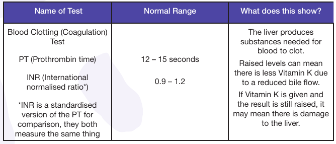
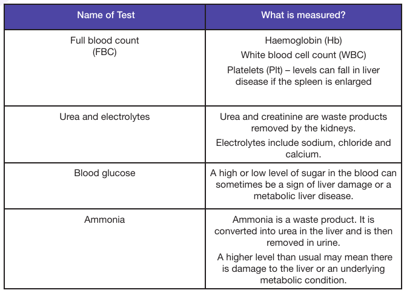
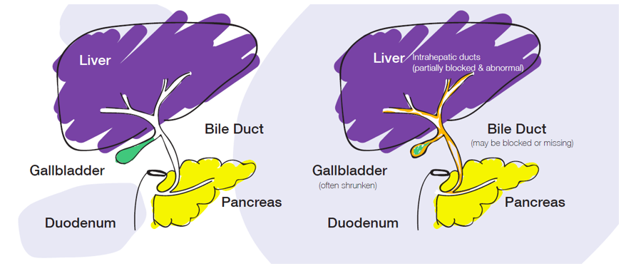

There are many medical terms which are used by those caring for children and young people with liver disease. It can be really helpful to know these terms which may be used during appointments.
If you come across a medical term you don’t know you can look up an explanation here.
A |
B |
C |
D |
E |
F |
G |
H |
I |
J |
K |
L |
M |
N |
O |
P |
R |
S |
T |
U |
V |
W |
X
A
Acute – sudden and severe.
Alanine aminotransferase (ALT) – an enzyme produced mainly in
the liver.
Albumin – a protein made by the liver. Controls fluid in the blood
and tissues.
Alkaline phosphatase (ALP/ALK-PHOS) – an enzyme produced
in the bile ducts and elsewhere in the body.
Alanine aminotransferase (ALT) – an enzyme produced mainly in
the liver.
Anaemia – a lack of iron can lead to a person having fewer red
blood cells than usual. There can also be other causes.
Anastomosis – a connection made surgically between two tubes.
Angiogram – a scan using x-rays to see blood vessels. It can be
used to see the blood vessels which supply the liver.
Antibody – a protein which fights infection.
Ascites – fluid collecting in the abdomen.
Aspartate aminotransferase – an enzyme produced mainly in the liver.
Atresia – blocked, destroyed or missing.
Autoimmune (autoantibodies) – an immune response against the
body’s own tissue.
B
Banding – a treatment for varices. Surgical elastic bands are
placed around the varices during an endoscopy.
Bile – a green/yellow liquid containing bile salts, bilirubin and
cholesterol.
Bile acids – acids found in bile which can be converted into bile
salts.
Biliary tract – the system of tubes which carry bile from the liver
and gall bladder and drain into the intestine.
Bilirubin – this is a product of the breakdown of old red blood
cells. It has a yellow colour which gives stool and blood their
colour.
Bilirubin travels in the blood stream to the liver where it has a
sugar added and becomes conjugated bilirubin. Before this
sugar is added it is known as unconjugated bilirubin.
Biopsy (liver) – a procedure to take a small sample of the liver to
test in the laboratory.
Body Mass Index (BMI) – a test using height and weight to
measure whether an individual is a healthy weight.
C
Cannula - a short, soft, narrow plastic tube temporarily put into
a vein so medicines/fluids/blood etc. can be given intravenously
(IV) as needed.
Cardiac – refers to the heart.
Cardiovascular system – the heart and blood vessels which
transport nutrients and oxygen around the body.
Carrier – someone who has a gene which can cause a genetic
condition but doesn’t have the condition themselves.
Cell – basic structural and functional component of all living
things.
Central venous line (CVL) – a central line is similar to a cannula
but is a longer tube used to give medicine, fluid, nutrition or blood
directly into a larger vein and can also be used to take blood
samples. It is a long, narrow plastic tube which can be placed into
a vein in the neck, chest or groin and is used for longer than a
cannula. It is usually inserted under a general anaesthetic.
Cholangitis – inflammation or infection of bile ducts which can
cause poor bile flow from the liver and liver damage.
Cholestasis – reduction or blockage of bile flow.
Chronic Hepatitis – inflammation of the liver that lasts over a
period of time. Liver cells may be destroyed by the inflammation.
Chronic – an illness or condition which lasts over a period of time.
Cirrhosis – scarring of the liver when liver cells are damaged and
destroyed. Scarring can stop blood flowing through the liver
properly leading to further damage. The liver becomes smaller,
hardens and can’t function properly. Cirrhosis cannot be reversed.
Coagulopathy – refers to any condition where the blood cannot
clot properly.
Computerised tomography scan (CT Scan) – x-rays are used to
create a detailed picture of different parts of the body.
Congenital – a condition which is present from birth.
Cystic – relating to the gall bladder.
Cytomegalovirus (CMV) – a virus belonging to the herpes virus
group.
D
Distension – expansion or enlargement.
Duct – a tube which fluid can pass through from one part of the
body to another, e.g. bile ducts.
Dysplasia – the abnormal development of body tissue or an
organ.
E
Echocardiogram (Echo) – a scan of the heart using high
frequency sound waves, similar to an ultrasound of the
abdomen.
Electrocardiogram (ECG) - records the electrical activity of the
heart.
Encephalopathy – changes in the brain which can be due to liver
failure. The build-up of toxins in the blood can lead to tiredness,
irritability and personality changes.
Endoscopic retrograde cholangiopancreatography (ERCP)
– a special x-ray used to examine bile ducts under general
anaesthetic.
Endoscopy – using a flexible, thin tube with a camera attached
to look at the inside of the upper end of the digestive system. It
is passed through the mouth and down the oesophagus (food
tube).
Enteral feeding – feeding through a tube directly into the
stomach or part of the intestine.
Enzyme – substances in the body which help chemical reactions
to take place.
Epstein Barr virus (EBV) – a virus which causes glandular fever.
F
Faeces – also known as stool or poo.
Fibrosis – scar tissue which replaces normal tissue which, when
extensive, is known as cirrhosis.
Full blood count (FBC) – a blood test measuring all of the
different types of cells in the blood.
Fulminant – a severe, sudden form of liver failure. More
commonly known as acute liver failure.
G
Gallbladder – a small sac which stores and releases bile made
by the liver.
Gallstones – the stones which can be formed by bile and collect
in the gall bladder and bile ducts. They can cause pain and
may pass into the common bile duct and cause cholangitis or
obstructive jaundice.
Gamma-Glutamyl Transferase (also known as Gamma
Glutamyltranspeptidase (Gamma GT (GGT)) – an enzyme
produced mostly by the bile ducts.
Gastroenterology – study of the digestive system.
General anaesthetic – an individual is put into a state of
controlled unconsciousness.
Genes – genes are made up of DNA and provide instructions for
the body.
Graft – an organ, tissue or cells used for transplantation.
H
Haematemesis – vomiting (sickness) blood.
Haemoglobin – part of a red blood cell which carries oxygen
around the body.
Hepatic – referring to the liver.
Hepatic artery – the blood vessel which brings blood with
oxygen to the liver.
Hepatic vein – the blood vessel which takes blood away from the
liver.
Hepatitis – inflammation of the liver.
Hepatology – study of the liver.
Hepatomegaly – enlargement of the liver.
Hypo/hypertension – low/high blood pressure.
I
Idiopathic – something which doesn’t have a known cause.
Immune system – the body’s defence which fights against
foreign substances in the body such as bacteria and viruses.
Immunity – protection against a particular disease. This can
happen naturally or due to vaccination.
Immunoglobulin – a protein which plays a role in the immune
system.
Immunosuppression – medications which can be taken which
make the immune system less active.
Incidence – the number of new cases of a disease over a certain
period of time in a set population.
International normalised ratio (INR) – a measure of how well
blood clots.
Intravenous – into the vein. Some drugs are delivered straight
into the veins.
J
Jaundice – a high level of bilirubin in the blood leading to the yellowing of the skin and/or the whites of the eyes.
K
Kasai portoenterostomy – an operation to get bile flowing from
the liver to the intestine in biliary atresia. Bile ducts are removed
and a piece of intestine is used to replace the ducts.
L
Liver function tests (LFT) – blood tests which can show how well
the liver is working.
Liver transplant – an operation to replace a damaged liver with a
donor liver.
- Auxiliary liver transplant – where part of a donor liver is placed alongside the child’s own liver.
- Orthotopic liver transplant – where the child’s liver is replaced by all of part of a donor liver.
Lymph – a clear, watery liquid derived from body tissues which
carries white blood cells and fats. It travels through the lymphatic
system of the body.
Lymphadenectomy – an operation to remove the lymph nodes.
M
Magnetic resonance imaging (MRI) – a detailed scan of the body
using magnets rather than x-ray.
Malabsorption – the body doesn’t absorb nutrients properly
when we eat them.
Metabolism – the processes in the body which break down and
build up different chemicals.
Metabolic disorder – a condition in which metabolism is affected.
N
Nasogastric (NG) feeding – giving food through a tube which
goes through the nose and down the throat to the stomach.
Nasogastric tube – the tube used during NG feeding above.
Nasojejunal (NJ) tube – a small tube that is passed up the nose
and down the throat, through the stomach, and into the small
intestine used for feeding.
O
Oedema – also known as fluid retention, fluid builds up in the
tissues affected.
P
Parenteral nutrition (PN) – feeding nutrients directly into the vein
when an individual cannot eat normally.
Percutaneous Transhepatic Cholangiography (PTC) – a special
x-ray which looks at the bile ducts. It is done under a general
anaesthetic using a needle which is inserted through the skin of
the abdomen into the bile ducts. It can be used to diagnose and
treat a variety of bile duct issues.
Phlebotomist – a person who takes blood samples.
Platelets – part of the blood and important for clotting the blood.
They can be low in people with liver disease.
Polymerase Chain Reaction (PCR) – a test which checks if a
virus is present in the blood. A positive result means the virus is
present.
Portal Hypertension – high blood pressure in the portal vein
which may occur due to scarring of the liver or a blockage of the
portal vein.
Portal Vein – main vein carrying blood from the intestine to the
liver.
Pruritus – itching of the skin.
Pulmonary – refers to the lungs.
R
Rejection – when the body’s immune system attacks a
transplanted organ. It can be acute (sudden) or chronic (over a
period of time).
Renal – refers to the kidneys.
Respiratory – refers to breathing.
S
Sclerotherapy – a treatment for varices where a solution is
injected into them during an endoscopy.
Screening – testing for a condition or the genes for a condition.
Spider Naevi – small, broken veins under the skin which can look
like red spiders.
Spleen – an organ which removes old blood cells. Its blood
supply is connected to the liver.
Splenomegaly – an enlarged spleen.
Split bilirubin test – a blood test which measures how much
conjugated and unconjugated bilirubin is in the blood. See
‘bilirubin’ for more information.
Steroids – medication which reduces the activity of the body’s
immune system.
T
Thrombosis – a blood clot in a vein or artery.
TPR – an abbreviation for temperature, pulse and respiration.
Triglycerides – a type of fat.
TTA and TTO – abbreviation for ‘to take away’ or ‘to take out’
referring to medicines which are taken home.
U
Ultrasound scan (USS) – a scan which takes pictures of organs
and blood vessels inside the body.
Urea and electrolytes – may be called ‘U & E's or kidney function
tests. They are monitored to see how well the kidneys are
working.
V
Varices – veins in the lining of the intestine, oesophagus and
stomach which can be enlarged and swollen due to portal
hypertension and can bleed if not treated.
Viral load – a viral load test is a lab test that measures the
number of virus particles in a millilitre of blood.
X
Xanthomas – cholesterol deposited under the skin which can
look like pale warts.
Liver Disease
What is the liver?
Throughout this site, a lot of technical vocabulary is used, please use the glossary (found on the top right of this page) if you are unsure of the meaning of something.
The liver is a large organ found at the top of the abdomen (tummy area) on the right side. It is made up of cells; blood vessels and bile ducts.
The main cells in the liver are known as hepatocytes.
The liver is made up of two main parts: the right lobe and the left lobe. The right lobe is large, whilst the left lobe is smaller.
What does the liver do?
The liver filters blood
It receives blood from two sources:
- From the heart (via the hepatic artery)
- From the intestine (via the portal vein)
The liver processes and stores nutrients from the blood to allow the body to use them. The blood entering the liver from the intestine contains fats, carbohydrates, vitamins and other nutrients.
The liver processes waste products
The liver gets rid of waste such as the breakdown
products of old red blood cells, ammonia (which
comes from proteins), medicines and drugs.
The liver makes lots of different substances:
- Blood plasma proteins such as albumin
- Clotting factors
- Cholesterol
- Vitamin D
- Immune Factors
- Some hormones
- Bile
What is Bile?
The liver produces bile which is a green/yellow
liquid. Bile is formed from bilirubin, which comes
from old red blood cells which have been broken
down in the spleen. Bile helps the body to digest
food by breaking fats down so they can be absorbed
and enables the absorption of fat-soluble vitamins.
Bile also helps the body get rid of waste products
such as bilirubin and excess cholesterol which it
passes out into the stool (poo).
What are the signs of liver disease?
There are many different signs and symptoms and they depend on the underlying cause. It’s rare for them to all happen at once. Liver damage can happen slowly over time, but sometimes it can happen very suddenly.
Signs and symptoms include:
- Jaundice (yellowing of the skin and the whites of the eyes)
- Nausea, vomiting and loss of appetite
- Yellow urine in newborns, dark urine in older children
- Pale coloured stools
- Change in sleep patterns in older children
- Vomiting blood or passing blood in the stool
- Tiredness
- Abdominal Swelling
- Itching (known as pruritus)
- Poor weight gain or weight loss
- Abdominal pain
- Nosebleeds and bruising easily
What tests are used for diagnosis?
Blood Tests
Liver function tests (LFTs) are carried out on blood
samples in a laboratory. They are a common way
of seeing how well the liver is working. They test
the levels of proteins and enzymes in the liver as
well as the level of bilirubin. Liver function tests are
also used to monitor a child’s liver disease over
time to see if the liver is getting healthier, getting
worse or staying the same.
How well the liver is functioning is assessed by measuring what the like is making, for example, albumin (a type of protein) and clotting factors all of which are made by the liver.

Another blood test which is helpful to assess how the liver is working is a blood clotting test. Blood is taken, chemicals are added to it in the lab and the time taken for blood to clot is measured.

Other blood tests include:
 Urine and Stool
The colour of urine (wee) and stool (poo) can
provide information about the liver. As mentioned
previously pale stool can be a sign of a problem
with the liver, along with dark urine. Sending urine
samples to the laboratory can give more
information for the diagnosis.
Abdominal Ultrasound
This is a scan of the abdomen. It’s the same as the
scan that pregnant women have to see their baby
and doesn’t hurt at all.
The ultrasound can show the size and texture of
the liver and other organs such as the gall bladder,
bile ducts, spleen and kidneys. It can also show the
blood flow into and out of the liver.
Liver Biopsy
A liver biopsy will be recommended if tests show
that there could be a problem with the liver. The
results of the biopsy can be used to tell if there is a
problem with the liver and what it is. As well as
helping to diagnose liver disease biopsies can be
used to monitor the condition.
A liver biopsy involves inserting a very thin needle through the tummy and into the liver. The needle takes a very small sample of the liver. That sample of liver tissue is then sent to the laboratory to be examined under a microscope.
Children may either have the procedure done with a local anaesthetic or with general anaesthetic (so they are asleep). When young people move to adult services, they will have the biopsy done whilst they are awake using a local anaesthetic.
What treatments are available?
There are treatments which can control and support the liver. Treatment will depend on the specific liver disease and the age and condition of the child , but they can include:
- Medicines
- Special diets
- Operations
- Exercise or lifestyle change
- Liver transplantation
CLDF is committed to funding research into treatments for childhood liver disease. You can read about the current research programme at childliverdisease.org
Biliary Atresia
What is Biliary Atresia?
Biliary atresia is a medical condition. It can occur either:
- Before birth due to the bile ducts developing abnormally
- Shortly after birth due to the bile ducts becoming inflamed or obstructed
In most babies with biliary atresia bile ducts on the inside and outside of the liver are affected eventually leading to a complete blockage of bile flow from the liver. This in turn causes scarring (fibrosis) in the liver.

Diagram one
Showing the normal liver, gall bladder, bile ducts and upper intestine in a healthy child.
Diagram Two
Showing the liver, gall bladder, bile ducts and upper intestine of a child with biliary atresia.
What are the causes and the signs?
The cause of biliary atresia is unknown. Research is being carried out but it hasn't provided any definite answers yet.
Parents often feel guilty that they may have, in some way, contributed to their child having the condition. These feelings are understandable but there is no evidence to suggest that biliary atresia hereditary (can be passed on to children by their parents) or due to anything parents might have done or taken . Children with biliary atresia will not pass the condition on to their own children.
In the first weeks of life babies with biliary atresia often seem well apart from being jaundiced (yellow discolouration of the skin and of the whites of the eyes) and in some cases feeding more often.
There are two types of jaundice in babies:
1) Physiological Jaundice
The first is very common and in most babies, it clears within the first two weeks of life. The Children’s Liver Disease Foundation has a booklet explaining baby jaundice which is available online.
2) Pathological Jaundice
This is caused by a problem with the liver. This type of jaundice does not fade and babies who are jaundiced after two weeks (three weeks if pre-term) should have a split bilirubin blood test performed to find out which type of jaundice it is.
The other important signs of pathological jaundice are:
- Urine Colour - Normally the urine of a newborn baby is colourless. If a baby’s urine is persistently yellow or dark in colour this can be an indication of liver disease.
- Pale Stools - Normally the stools of a baby are green or yellow. If the stools of a baby are grey, white, fawn or pale then this can be an indication of liver disease.
CLDF have a stool chart which includes the colours of healthy and potentially unhealthy stools. You can use this to examine your baby’s stool.
You can download a stool chart or order a hard copy on CLDF’s website: www.childliverdisease.org
Is there more than one type of biliary atresia?
Yes, there are three types of biliary atresia. In all three types the bile ducts in the liver are affected.
In type one and two some of the bile ducts near the liver may stay open. In type three all of the ducts outside the liver are blocked. Type three is the most common type of biliary atresia.
The treatment for all three types is the same but the results are slightly better if your baby has a type one or type two biliary atresia.
How can biliary atresia be treated?
If the tests show that there is a strong indication that your baby has biliary atresia, he/she will require surgery. This will involve carrying out an investigation called an operative cholangiogram under a general anaesthetic to confirm the diagnosis.
If biliary atresia is confirmed then this will be followed by a “Kasai procedure” , usually done under the same general anaesthetic at the same time.
This procedure was named after the Japanese surgeon who first performed the operation in 1957. The aim of the operation is to help bile drain from the liver into the gut.
What happens before/during the operation?
Blood tests will be performed and will include checking your baby’s blood group in case there is a need to give blood to your baby before, during or after surgery. Your baby may be given special medicines to prepare the gut for surgery.
Your baby will not be fed milk for a number of hours before the operation. This will differ depending on which liver unit your baby is having the operation at. The team caring for your baby will explain what this involves. If you are breast feeding, speak to your nurse regarding expression and storage of milk.
You will be allowed to go down to the operating theatre with your baby and stay until just before your baby is asleep.
The aim of the operation is to make a drainage tube to allow bile to drain from the liver.
During the operation the surgeon will look at the liver and see if there are abnormalities. The surgeon will also remove a tiny piece of the liver to send to the laboratory for further tests (a liver biopsy).
The surgeon will carry out the operation called the Kasai operation (Kasai portoenterostomy).

During the operation the gallbladder and all the abnormal bile ducts outside the liver are removed . At the highest point, along the surface of the liver, there are usually enough very small bile ducts which will allow some bile flow to be re-established. The surgeon will join a loop of intestine to the under surface of the liver.
The operation will last a whole morning or afternoon . Putting your baby to sleep, inserting lines (tubes) so that your child can have fluids through their vein, giving your child pain management and then waiting for your baby to wake up will take longer.
The doctor responsible for putting your child to sleep (the anaesthetist) can explain the kind of lines they will insert to monitor your child and to give them medications or blood products after the operation.
Are there any complications?
Between 10-20 babies out of 100 with biliary atresia may have additional problems found during surgery.
These may include the following:
- Some children with biliary atresia can have multiple small spleens (polysplenia) or the spleen can be absent (asplenia)
- The intesting may not have properly curled up into the abdomen during development (intestinal malrotation).
This will need to be corrected at the time the surgeon operates for biliary atresia. - Some abnormalities of the veins in the abdomen
- Heart defects
If some or all of these complications occur it is a condition known as “biliary atresia – splenic malformation syndrome (BASM)”. This group of children with biliary atresia may be less likely to clear their jaundice after the operation. They also need additional tests such as a heart scan to check for problems. It may also be necessary for them to take daily antibiotics to reduce their risk of infection.
What happens immediately after the Kasai Operation?
You will be able to collect your child from the operation recovery area.
There will be a tube running through your baby’s nose down into the stomach. This is called a naso-gastric tube. This usually drains into a clear bag and keeps the stomach empty which helps to prevent sickness. It is important to keep your baby’s stomach empty for 48-72 hours until the feeds are commenced.
You will not be able to feed your baby for a couple of days . This is because the surgeon operates on the
bowel which stops it from working for a short time. There is a danger of leakage from the point where the bile ducts have been joined to the bowel if the feeds are started too early. The bowel recovers within a couple of days and feeding can resume. Until then your baby will be fed through an intravenous drip.
Intravenous Drips
A central line will be placed into one of the bigger blood vessels in the neck at the time of the surgery. It will be used to provide fluids, medication including pain relief, antibiotics and blood products. It will be taken out when these are no longer needed. Fluids are given in order to keep the sugar, salt and water levels at the right level in the body. Blood tests will be carried out to check these levels so that they can be changed if needed. All fluids required by your baby will be given through the drip until feeding is re-started.
Pain relieving drugs
These are often given nonstop via the central line or a cannula (a tube inserted into a vein). A special pump controls the rate and amount of the drug given. Sometimes pain relief is given through a small tube inserted into a baby’s back at the time of the operation. This is similar to those used for women in labour. This is called an “epidural catheter”. Pain relief will be discussed with you.
Antibiotics
Your baby will receive antibiotics through a vein (intravenously) for three to five days after surgery.
Urinary catheter
Your child will have a urinary catheter which will drain urine from the bladder. This is to ensure their urine output is measured accurately to check how well the kidneys are working.
Abdominal drain
An abdominal drain will be placed during surgery to drain excess blood and fluid from around the liver. This will be removed as the drainage decreases. A dressing may cover the wound on your baby’s tummy for the first few days. The dressing will be changed as needed. The stitches do not need to be removed as they will dissolve after the wound has healed.
It will be possible for you to hold your baby the day following the surgery, the nurse will help you .
What happens next?
If there are no problems after the surgery then your baby will be allowed to go home , usually around seven to ten days after the operation, once you and the medical team are happy with your baby’s condition.
Before going home the clinical staff will make sure that the wound is healing and there is no suggestion of infection anywhere in the body. You will be given or sent an outpatient appointment.
Before your baby leaves the hospital you will be given an initial supply of medicines and feeds. More will be arranged through your GP.
It is quite common for the hospital staff to advise your health visitor, GP and local hospital about your child’s condition and any special care which is needed so that they can offer you useful support when you are at home. Your Clinical Nurse Specialist (CNS) will stay in touch with you and you will be able to ring them whenever necessary so you are not alone .
Once your child can leave the hospital they will require longterm follow-up by the doctors, specialist nurses and dieticians. It is often helpful for your baby to be weighed on a weekly basis to monitor weight gain. It is important that your child receives their immunisations and to discuss timing and additional immunisations with their medical team.
What should I do when I'm back home with my baby?
If your baby was being breast fed before you found out they had biliary atresia it may be possible to start breast feeding again, normally alongside other formula feeds. It is important that your milk has been maintained by “expressing” milk while your baby is unable to feed. The nursing staff will help and advise you with this.
Most babies with biliary atresia are unable to gain enough weight on breast milk alone. Your baby might need special milk formula. There are a number of special milks for babies suffering from liver disease. These milks have fats which are more easily digested by babies with liver disease.
Powders can be added to the formula to increase the number of calories given to your child. This will make sure your child can gain weight. If this is needed a dietician will tell you how to combine breast and bottlefeeding.
The doctor will prescribe extra vitamins for your baby. This is because babies with prolonged jaundice also have problems absorbing certain vitamins. CLDF’s Nutrition leaflet has more detailed information on this.
When you get home you should try and treat your baby as normally as possible. Obviously you will be worried at times and this is quite normal. Babies with biliary atresia get common illnesses just like any other baby.
Symptoms for which you should seek advice from your GP or hospital are:
- A raised temperature of 37.8ºC or more, or non-specific illness with a raised temperature
- More jaundice with paler stools and darker urine
- The child is generally unwell
If you have any queries regarding your child, please do not hesitate to contact your Clinical Nurse Specialist at the liver unit treating your child. Children’s Liver Disease Foundation provides family support and is on hand to provide help and information whenever you need it.
What medicines may my baby need and why are they given?
The medicines required will depend upon your child's condition and progress as well as the liver unit you are at. The medical team will help you to understand which medicines your baby will need to take and when.
You can find a downloadable "Drug Chart" on this site.
It is important to note that some medicines are not available straight away at pharmacies. You may need to order them from the pharmacy two to three days in advance.
Antibiotics
- After the operation antibiotics are given by a drip at first and then by mouth. They are used to reduce the risk of infection in the bile ducts (cholangitis). Further antibiotics may be given as needed.
Vitamins
- This may be given to increase the flow of bile. As it may make your baby sleepy at first, it is usually given as a single dose, in the evening.
URSO (Ursodeoxycholic acid)
- This drug is given after restarting feeding after the Kasai operation. It aims to promote the flow of bile.
Colestyramine
- This comes in the form of a powder in individual sachets. Each sachet is mixed with water and given in liquid form. This may be given to improve liver function and remove substances which may otherwise cause the skin to itch.
- A side effect of colestyramine is that it can affect the absorption of some drugs, especially vitamins and ursodeoxycholic acid. Therefore, with babies it is best to give some at each feed time except when vitamins are given.
- As your baby becomes older and manages larger volumes, the daily dose of colestyramine can be given all at once or split into two. For a toddler or older child needing colestyramine it is best given in one or two doses away from the main meal times and vitamins. Always leave at least two hours between giving colestyramine and vitamins.
Ranitidine
- It is common to find stomach irritation after any type of abdominal operation and this drug may be given to help lessen this problem.
Steroids
- Steroids are also given to reduce inflammation.
Occasionally the medical team will need to use the following medicines:
Spironolactone
- This may need to be given to help your baby get rid of extra fluid which otherwise collects in the abdomen and is called “ascites”. It is not needed in all cases.
If your child needs medicine to reduce a high temperature please use paracetamol (panadol/calpol etc.). Remember aspirin, ibuprofen and other drugs containing aspirin and ibuprofen (calprofen/nurofen) must not be given.
Please make sure all medicines are stored correctly and in a safe place. Your child’s medication and dosage will be reviewed at clinic appointments.
How can you tell the operation was successful?
At the time of the operation the surgeon will not be able to tell if the Kasai operation has been successful. The first stools after the operation are usually very dark and will then become paler.
If the operation is a success and bile drainage does occur the stools gradually change to a
yellow/green/brown colour and later the urine becomes paler.
The colour of the stools will be checked whilst your baby is in hospital. It is not unusual for there to be difference in the colour of the stools and every baby is different.
If bile drainage is established the jaundice gradually fades. Blood tests will show that bilirubin levels, which cause jaundice, drop towards a normal level. Most babies who clear jaundice after a Kasai procedure do so in two to three months after surgery. It is not unusual for liver function tests to remain abnormal even if the jaundice completely clears.
Even if the jaundice clears after a Kasai operation some children will develop complications due to liver damage. Therefore, all children should continue to be seen for regular check ups.
Of those babies who clear their jaundice some will achieve completely normal liver function and may never experience any further problems. Children who clear their jaundice but have persistently abnormal liver function tests may develop treatable problems such as portal hypertension or deteriorating liver function eventually. These can lead to liver transplantation. Many children who undergo a successful Kasai will be well with their own liver ten years later.
What is biliary atresia is not treated/treatment is unsuccessful?
If a baby has not had a Kasai procedure in the first two to three months of life the success rate the operation is very low.
If biliary atresia is not treated or the treatment isn’t successful the bile produced in the liver builds up causing damage to the cells of the liver eventually resulting in severe scarring (cirrhosis).
If this continues liver function deteriorates, complications occur and general health suffers. Liver transplantation is often the accepted form of treatment. Transplant is a huge step and is only considered when other treatments are ineffective.
Liver transplantation became available for children in the 1980’s. The results of liver transplantation are encouraging and are steadily improving. UK liver transplant centres are reporting an overall 90% 10-year survival rate for liver transplantation. Liver transplantation is now possible in children of any age.
If liver transplantation is an option for your child this will be discussed with you by your child’s medical team. The aim of liver transplantation is to restore your child to good health.
What other problems might occur?
In any baby who undergoes a Kasai procedure, even if they clear their jaundice completely, a number of problems may occur.
Cholangitis
Cholangitis is an infection of the bile ducts in the liver resulting in inflammation.
This may cause a fever, worsening or recurrent jaundice, or both. It requires urgent treatment with intravenous antibiotics which can only be given at your local hospital or the liver unit treating your child.
If the treatment is given locally, please ask the doctors to contact the liver unit treating your child.
If cholangitis is left untreated it can cause further damage to the liver. That is why prompt investigation of any high temperature (over 37.8ºC) or a non-specific illness is necessary in babies who have undergone a Kasai procedure. Although cholangitis most commonly occurs in the first year or two after a Kasai procedure it can occur at any time.
Ascites
Ascites is an abnormal collection of fluid in the abdomen.
A small amount of ascites can be present for up to six weeks after the operation but should then disappear. If it recurs at any time this is usually a sign that the disease has affected the ability of the liver to make a protein called albumin.
When the albumin level is too low, water from the child’s blood “leaks” out of the blood vessels and collects in the abdomen. In severe cases it may also collect in other parts of the body.
The first sign of this problem is often when clothes and nappies do not fit so well over the tummy. This
usually occurs gradually but may be started or made worse by infection.
If your child’s tummy becomes noticeably bigger, or your child has rapid weight gain that is not consistent with normal growth rates you should contact your liver team. Treatment for ascites may be started by your GP or local paediatrician in consultation with the liver unit and does not necessarily need admission to hospital.
Treatment can include medicines and altering the child’s diet. The aim is to make sure there is a high
amount of energy in the food given (calorie intake) but less fluid and salt. In more serious cases it may be necessary to admit your child to hospital and give albumin intravenously through a drip. You should never attempt to alter your child’s diet and, in particular, the fluid intake without medical advice.
Portal Hypertension
Portal Hypertension is high blood pressure in the portal vein which is the main vein carrying blood from the gut to the liver.
It may occur due to scarring in the liver which causes back pressure in the portal vein. This may cause
veins, like varicose veins, to develop in the lining of the gullet, stomach or gut. These are called varices. These veins become fragile and may bleed. It is uncommon for this to occur before the child is two years old. Bleeding can cause black stools, paleness or vomiting of blood. If bleeding does occur you will need to ring for an ambulance which will take you to your local hospital.
Itching (Pruritus)
Some children with reduced bile flow experience itching of the skin. This can develop at any time and may be upsetting for your child. If you think your child may be affected talk to your GP or liver unit. The itching may not be because of the liver dysfunction. Additional medicine may be required.
CLDF has a leaflet explaining ascites, portal hypertension and pruritus in more detail.
What will happen in the future?
Your baby/child’s growth and development will be followed up by periodic visits to the hospital. How often you will need to go to the hospital will vary for each child. Blood tests will be done to measure your child’s bilirubin level and liver function. Periodically an ultrasound will be performed to assess the size of the liver and other structures in the abdomen (e.g. the spleen).
CLDF is in touch with a large number of families who have children with biliary atresia. These children can live happy, fulfilling lives and achieve a huge amount. Biliary atresia doesn’t have to hold a child back from living a relatively normal life.
CLDF is here to support you throughout your child’s development.